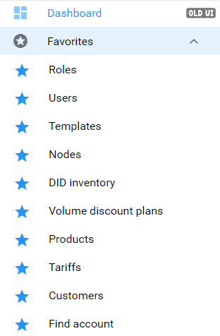
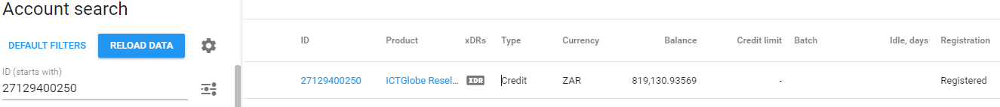
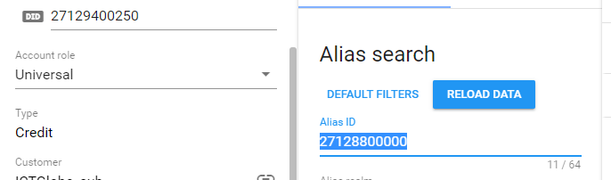
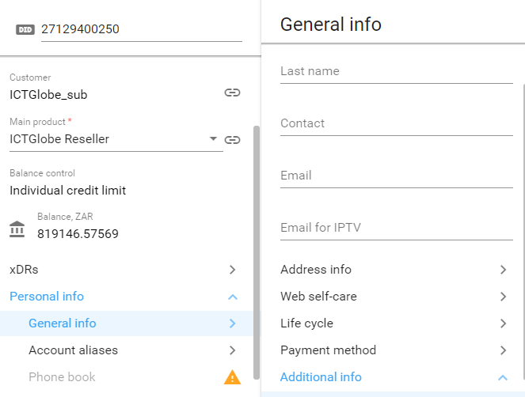
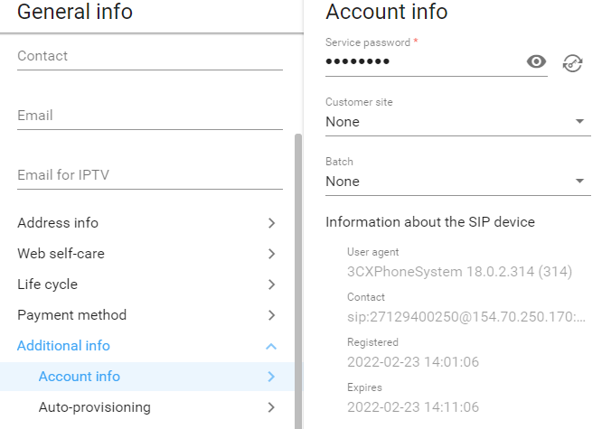
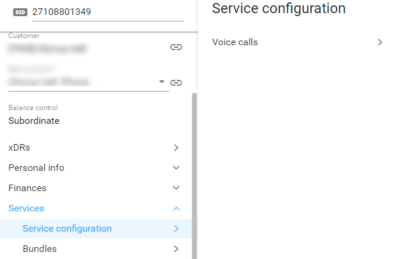
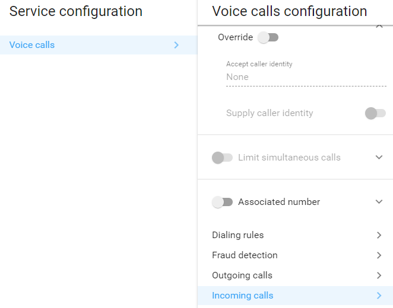
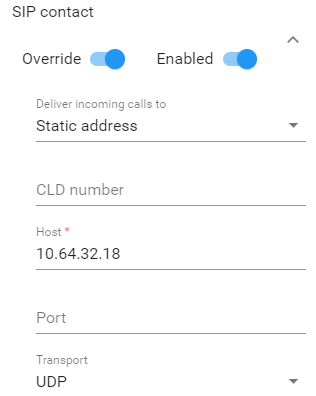

SIP Service Configuration
How check if a number is registered on Porta
1. Left on the navigation menu (if saved under 'Favorites'), select Find account from the drop-down list.
If not yet saved to your favorites, you can also search the 'Find Account' from here .

2. Once the number is found, note:
- First check the Type, if it shows 'Credit' this is a main SIP number. If the account is registered it will be noted under Registration. 
- Should the account be an Alias, it will be stated under Type and the registraion will be empty.
- The Main sip will be indicated at the left corner: 
NOTE: In this case click on the number to search the main SIP, to determine if it is registered.
3. There can be two types of registraion on an account:
- User Agent - Usually 3CX or a type of PBX registration.
- Static Address - Usually in the case of a cross connect, or other registraion type.
4. Confirming 'User Agent' registration:
- From the SIP found upon your search, select Personal Info at the bottom, then General Info, and then Additional Info: 
- Form Additional info, select Account info. Should the account be registered thhe user agent and registraion detail will display. 
5. Confirming 'Static Address' registration:
- From the SIP found upon your search, select Services at the bottom, then Service configuration, and then Voice calls: 
- Form Voice calls, select Incoming calls. 
- Then from Incoming calls configuration, scroll down to Sip contact were the Static address host will be shown, if applicable. 
NOTE: If none of the above was found in your search results, the account is not registered.